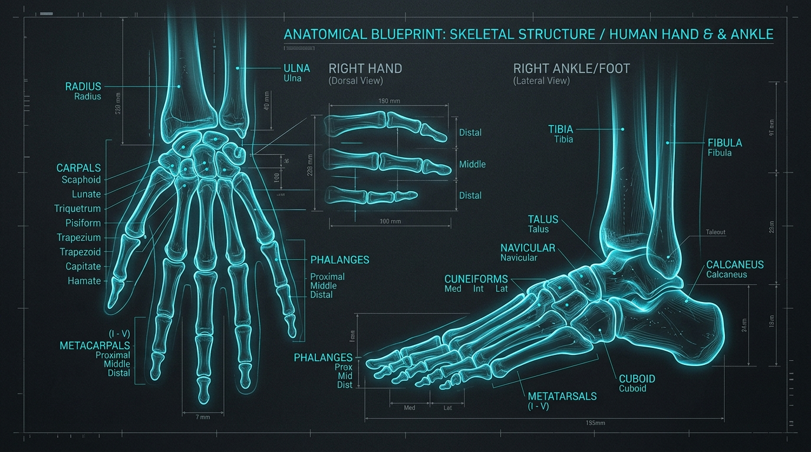
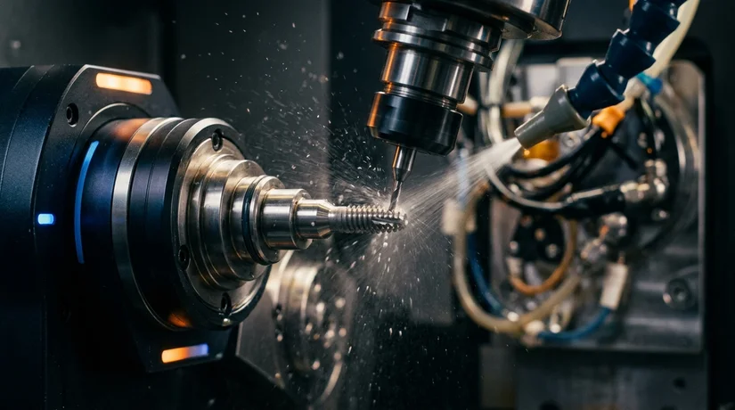
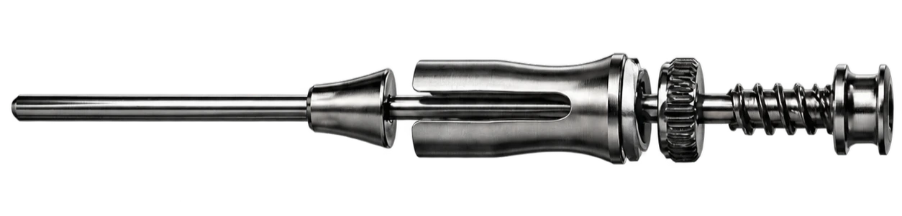

ENGINEERED
FOR
MOVEMENT.
Precision orthopedic technologies designed around the human body.
THE HUMAN BODY IS COMPLEX.
Anatomical geometry demands flexible, dynamic stabilization that respects blood supply and bone curvature.
Curvilinear Canal Navigation
Rigid straight implants force bone into unnatural alignment. Meduloc shape-memory elasticity conforms dynamically to patient-specific medullary anatomy.

SO ARE THE SOLUTIONS.
Anatomy transforms into precision medical engineering.
ORTHOPEDICS
Trauma Fixation
Sparing periosteal blood flow and joint capsules in acute diaphyseal and metaphyseal long-bone fractures.
DOWNLOAD CLINICAL MONOGRAPH →PRECISION AT EVERY LEVEL.
From raw titanium billet to sterile operating room delivery.

DESIGNED FOR SURGEONS.
BUILT FOR PATIENTS.
Surgical Excellence
- ✔ Intuitive ErgoDrive™ single-use driver
- ✔ Zero intraoperative tray sterilization wait
- ✔ Verified 510(k) cleared clinical evidence
Restored Independence
- ✔ Sparing MCP joint capsule & tendon envelopes
- ✔ Early post-op functional mobility
- ✔ Low profile entry preventing skin breakdown
INTRAMEDULLARY SYSTEM ARCHITECTURE.
Hover components across the mechanism to inspect precision engineering specifications.

Leadership that
builds the future.
SARAH SACHINIS, BSC
Chief Executive Officer
and President
MICHAEL COLLINS, MSBME, MBA
Director and Co-Founder
COO - Cor Medical Ventures
BENJAMIN ARNOLD, MSME
Director and Co-Founder
CEO - Cor Medical Ventures
BRIAN BOWMAN, BS
Co-Founder
CTO - Cor Medical Ventures